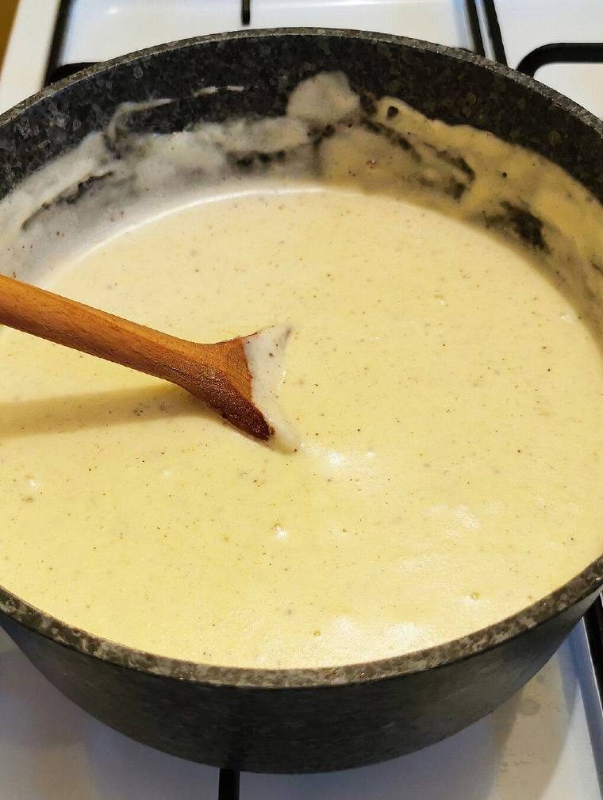

Sauces

Sauces
Béchamel
Préparation : 5 min
Cuisson : 10 min
Ingrédients (pour 4 personnes)
- 40 cl de lait
- 30 g de beurre
- 30 g de farine
- sel, poivre, muscade
Quantités adaptées. Les temps de cuisson ne sont pas recalculés.
- Faire fondre le beurre, ajouter la farine et cuire un instant sans colorer.
- Hors du feu, verser le lait en fouettant.
- Remettre sur le feu, porter à ébullition en remuant et laisser épaissir 1 à 3 minutes.
- Assaisonner de sel, poivre et muscade.
À conserver au froid, jamais au placard
Au réfrigérateur entre 0 et 4 °C : 2 jours au plus. Ne pas congeler. Refroidir vite, réchauffer jusqu’à ébullition en remuant.
AstucePour les piquillos farcis, la faire épaisse : moitié moins de lait. Avec du fromage râpé, c’est une Mornay.
D’après une fiche de l’école Swissmilk. Texte reformulé.